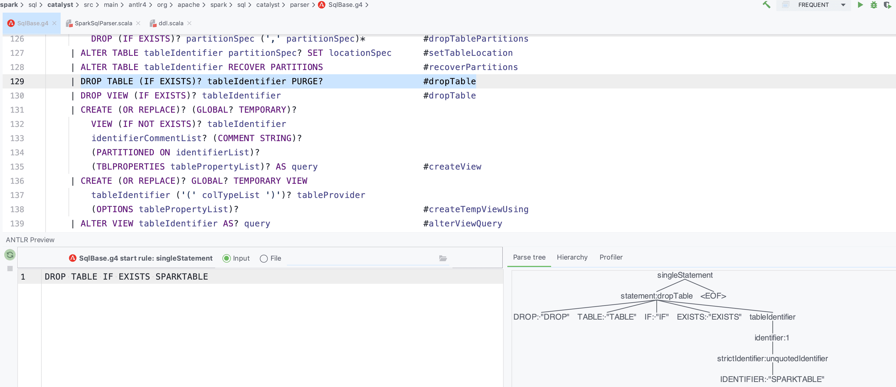
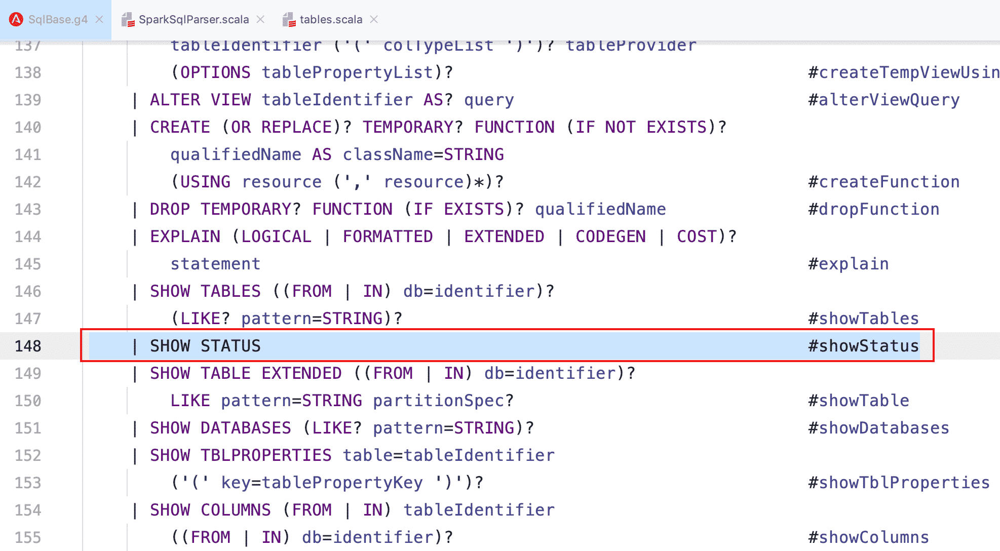
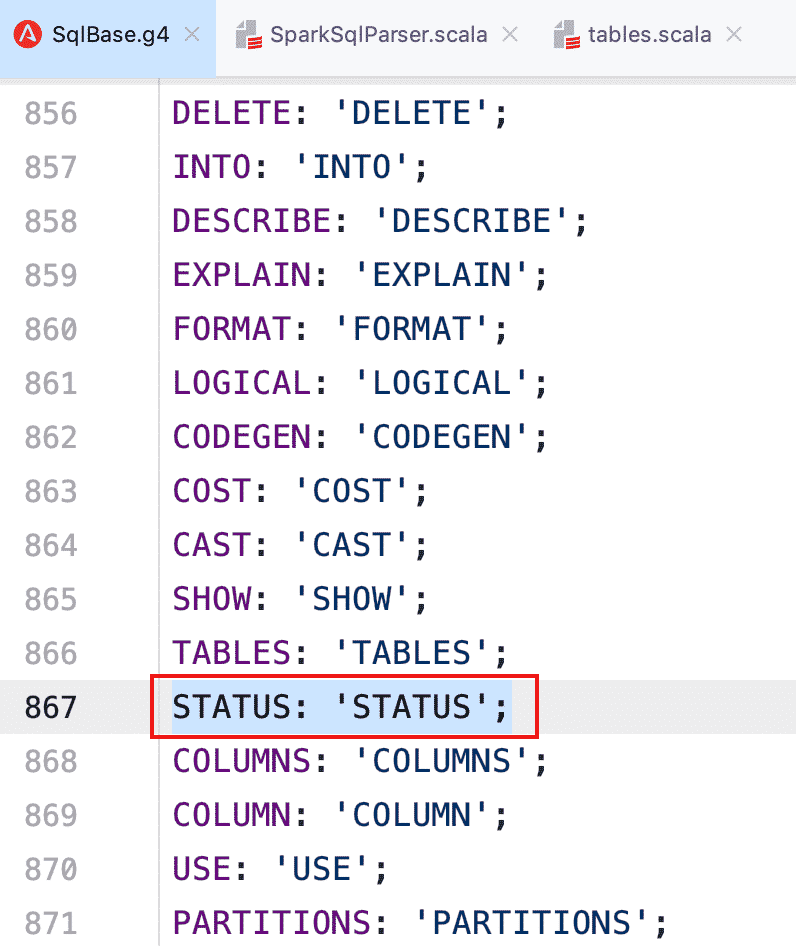
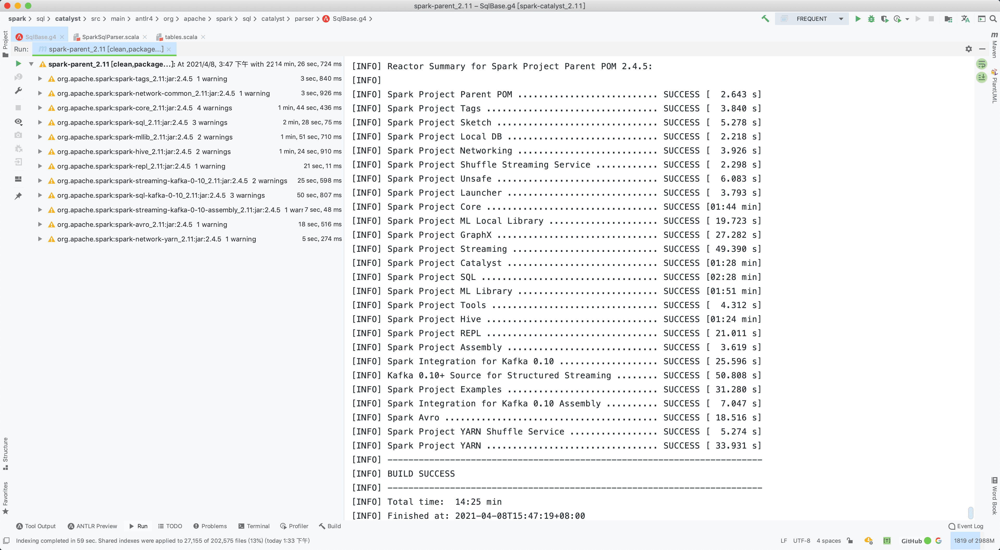
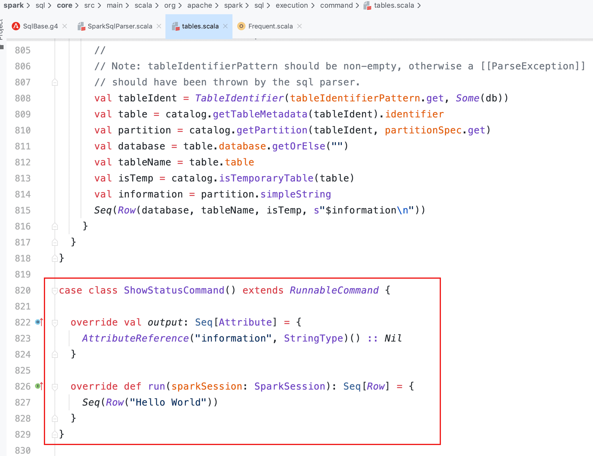
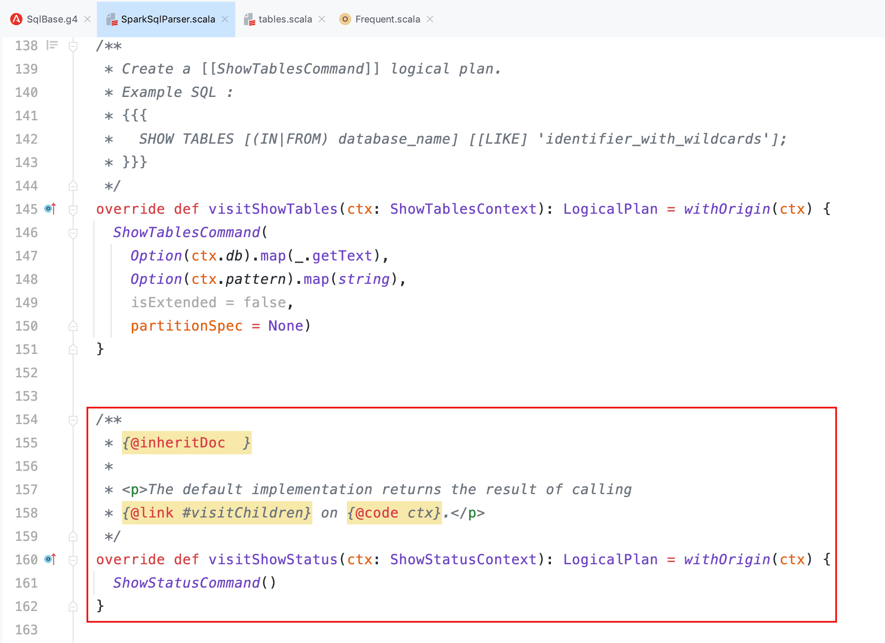
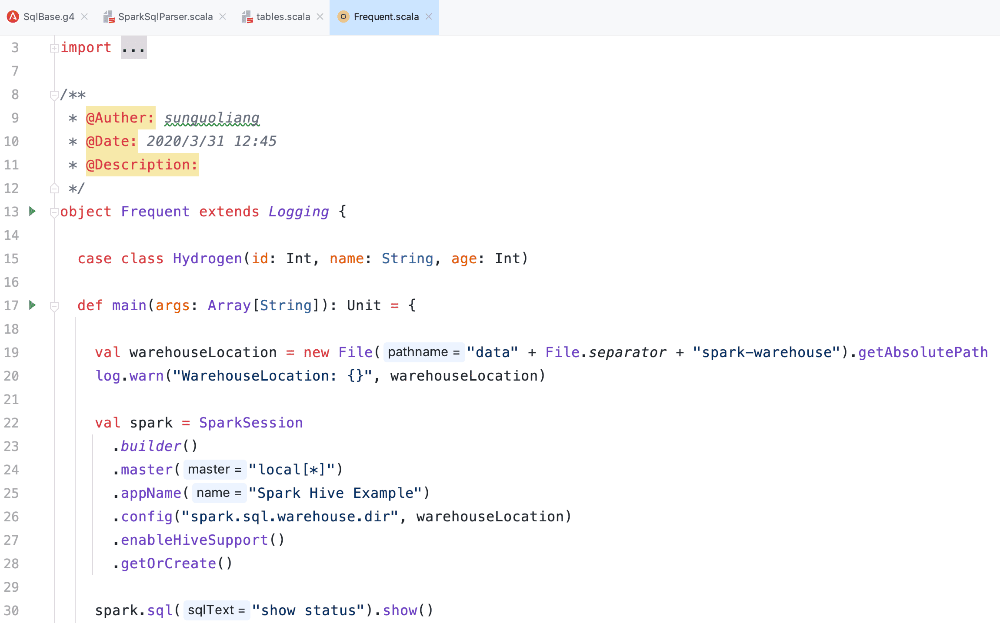
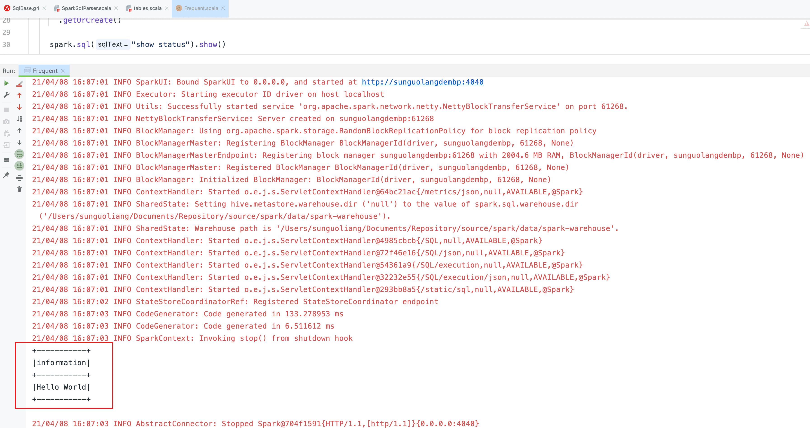

Spark SQL 执行流程
本文最后更新于：2021年4月8日 下午
Spark SQL 执行流程
一般来说，从 SQL 转换到 RDD 执行需要经过两个大阶段，分别是逻辑计划（LogicalPlan）和物理计划（SparkPlan），而在整个 Spark 的执行过程中，其代码都是惰性的，即到最后 SQL 真正执行的时候，整个代码才会从后向前按调用的依赖顺序执行。
概述
逻辑计划
Unresolved LogicalPlan：仅仅是数据结构，不包含具体数据Analyzed LogicalPlan：绑定与数据对应的具体信息Optimized LogicalPlan：应用优化规则
物理计划
Iterator[PhysicalPlan]：生成物理算子树的列表SparkPlan：按照策略选取最优的物理算子树Prepared SparkPlan：进行提交前的准备工作
流程图

源码分析
SparkSession 类中的 sql 方法是 Spark 执行 SQL 查询的入口，sqlText 即为用户输入的 SQL 语句，其中 parsePlan 方法则是对 SQL 语句进行解析，Spark 使用的编译器语法基于 ANTLR4 这一工具，下文会稍微提及此部分内容。
def sql(sqlText: String): DataFrame = {
Dataset.ofRows(self, sessionState.sqlParser.parsePlan(sqlText))
}Parser
ANTLR4
ANTLR4 有两种遍历模式，一种是监听模式，属于被动型的；另一种是访问者模式，属于主动型的，这也是 Spark 使用的遍历模式，可以显示地定义遍历语法树的顺序。
在 Spark 中体现为 SqlBase.g4 文件，包含词法分析器（SqlBaseLexer）、语法分析器（SqlBaseParser）和访问者类（SqlBaseVisitor 接口与 SqlBaseBaseVisitor 类）。
也就是说，如果用户需要增加新的语法，在 SqlBase.g4 文件中增加相应语法和词法后，重新编译后即增加了新的语法句式，然后便可以基于 AstBuilder（SparkSqlAstBuilder） 中对新增的语法进行逻辑补充，这种可以直接执行的都属于 Command，后面会以实例进行说明。
AbstractSqlParser
Spark SQL 中的 Catalyst 中提供了直接面向用户的 ParserInterface 接口，该接口中包含了对 SQL 语句、Expression 表达式和 TableIdentifier 数据表标识符等的解析方法。AbstractSqlParser 继承了 ParserInterface，主要借助 AstBuilder 对语法树进行解析（遵循后序遍历方式）。
SQL 实例
以 IDEA 为例，先安装 ANTLR4 的插件，然后右键选择 singleStatement，点击 Test Rule singleStatement 进行调试，这里我们输入一个简单的 SQL：DROP TABLE IF EXISTS SPARKTEST
此处的所有字母均为大写，因为这里对应的语法和词法是区分大小写的，我们仅仅是在调试对应的 SQL 语法树，Spark 在后面的解析中利用 UpperCaseCharStream 才会将 SQL 都转为大写进行处理，所以用户的 SQL 语句不需要大写，如下图。

现在我们来自定义一条 SQL 语法：SHOW STATUS
- 修改
SqlBase.g4文件，新增词法和语法


- 这里我是整个项目编译的，因为之前编译的不小心清除了，只需要编译 Spark SQL 模块即可

- 编写相应逻辑的 ShowStatusCommand 样例类

- 在 SparkSqlAstBuilder 中增加对外接口

- 通过 Spark API 使用 SQL 输出结果


Logical/Spark Plan
在 Dataset 中继续对未解析的逻辑计划进行解析，本文仅针对 Command 部分的逻辑计划举例分析。
def ofRows(sparkSession: SparkSession, logicalPlan: LogicalPlan): DataFrame = {
val qe = sparkSession.sessionState.executePlan(logicalPlan)
qe.assertAnalyzed()
new Dataset[Row](sparkSession, qe, RowEncoder(qe.analyzed.schema))
}可以看到，在 QueryExecution 中，将未解析的逻辑计划转换为解析的逻辑计划，详细代码在 Analyzer 的 executeAndCheck 方法中，最终调用了特质 CheckAnalysis 的 checkAnalysis 方法进行数据的绑定解析，代码较长此处就不贴了，这一过程会对应表（Relation）、Where 后的过滤条件（Filter）、查询的列（Project）、别名（Cast）等等进行绑定，解析失败会抛出相应错误。
def assertAnalyzed(): Unit = analyzed
lazy val analyzed: LogicalPlan = {
SparkSession.setActiveSession(sparkSession)
sparkSession.sessionState.analyzer.executeAndCheck(logical)
}当执行到 Dataset 中 ofRows 最后一行 new Dataset[Row](...) 时，会调用到初始化 logicalPlan 的地方，到这里开始向前追溯，需要判断当前解析后的逻辑计划是 Command 还是其他的逻辑计划。
Command 在 Spark 中比较特殊，可以直接在 Driver 端执行，此处我们基于上面的 DropTableCommand 来分析。
@transient private[sql] val logicalPlan: LogicalPlan = {
queryExecution.analyzed match {
case c: Command =>
LocalRelation(c.output, withAction("command", queryExecution)(_.executeCollect()))
case u @ Union(children) if children.forall(_.isInstanceOf[Command]) =>
LocalRelation(u.output, withAction("command", queryExecution)(_.executeCollect()))
case _ =>
queryExecution.analyzed
}
}往下继续执行，无论是 Command 还是其他的逻辑计划，均会经历下面的过程，不同的是 Command 直接就执行了，而其他的逻辑计划如查询等则会经历更多的变换过程直至发往 Executor 执行。
private def withAction[U](name: String, qe: QueryExecution)(action: SparkPlan => U) = {
try {
qe.executedPlan.foreach { plan =>
plan.resetMetrics()
}
val start = System.nanoTime()
val result = SQLExecution.withNewExecutionId(sparkSession, qe) {
action(qe.executedPlan)
}
val end = System.nanoTime()
sparkSession.listenerManager.onSuccess(name, qe, end - start)
result
} catch {
case e: Exception =>
sparkSession.listenerManager.onFailure(name, qe, e)
throw e
}
}前面说过，Spark 是惰性执行的，我们看一下 QueryExecution 中的部分代码，当真正需要执行的时候才会从 Prepared SparkPlan 向前追溯并按照依赖顺序执行，中间还有很多过程，包括优化逻辑计划，运用策略转换物理计划，选取最优物理计划等等，以下是逻辑计划和物理计划的转换过程部分代码。
lazy val executedPlan: SparkPlan = prepareForExecution(sparkPlan)
lazy val sparkPlan: SparkPlan = {
SparkSession.setActiveSession(sparkSession)
planner.plan(ReturnAnswer(optimizedPlan)).next()
}
lazy val optimizedPlan: LogicalPlan = sparkSession.sessionState.optimizer.execute(withCachedData)
lazy val withCachedData: LogicalPlan = {
assertAnalyzed()
assertSupported()
sparkSession.sharedState.cacheManager.useCachedData(analyzed)
}
lazy val analyzed: LogicalPlan = {
SparkSession.setActiveSession(sparkSession)
sparkSession.sessionState.analyzer.executeAndCheck(logical)
}Command
接上面 Dataset 里 logicalPlan 中的 _.executeCollect() 方法，由于是可执行 Command，所以调用至 ExecutedCommandExec 的 executeCollect 方法继续执行，最终调用了 DropTableCommand 的 run 方法执行。
override def executeCollect(): Array[InternalRow] = sideEffectResult.toArray
protected[sql] lazy val sideEffectResult: Seq[InternalRow] = {
val converter = CatalystTypeConverters.createToCatalystConverter(schema)
cmd.run(sqlContext.sparkSession).map(converter(_).asInstanceOf[InternalRow])
}DropTableCommand 继承了 RunnableCommand，而 RunnableCommand 则包装在 ExecutedCommandExec 中，下面的代码可以看到，先根据表名取出对应表的元数据信息，然后清除缓存并刷新缓存状态，再调用 SessionCatalog 的 dropTable 方法，如果是 Hive 表，则会调用 externalCatalog（HiveExternalCatalog）的 dropTable 方法对表进行删除。
case class DropTableCommand(
tableName: TableIdentifier,
ifExists: Boolean,
isView: Boolean,
purge: Boolean) extends RunnableCommand {
override def run(sparkSession: SparkSession): Seq[Row] = {
val catalog = sparkSession.sessionState.catalog
val isTempView = catalog.isTemporaryTable(tableName)
if (!isTempView && catalog.tableExists(tableName)) {
catalog.getTableMetadata(tableName).tableType match {
case CatalogTableType.VIEW if !isView =>
throw new AnalysisException(
"Cannot drop a view with DROP TABLE. Please use DROP VIEW instead")
case o if o != CatalogTableType.VIEW && isView =>
throw new AnalysisException(
s"Cannot drop a table with DROP VIEW. Please use DROP TABLE instead")
case _ =>
}
}
if (isTempView || catalog.tableExists(tableName)) {
try {
sparkSession.sharedState.cacheManager.uncacheQuery(
sparkSession.table(tableName), cascade = !isTempView)
} catch {
case NonFatal(e) => log.warn(e.toString, e)
}
catalog.refreshTable(tableName)
catalog.dropTable(tableName, ifExists, purge)
} else if (ifExists) {
// no-op
} else {
throw new AnalysisException(s"Table or view not found: ${tableName.identifier}")
}
Seq.empty[Row]
}
}Spark SQL 中的 Catalog 体系实现以 SessionCatalog 为主体，通过 SparkSession 提供给外部调用，它起到了一个代理的作用，对底层的元数据信息、临时表信息、视图信息和函数信息进行了封装。初始化过程在 BaseSessionStateBuilder 类，而 externalCatalog 则是基于配置参数 spark.sql.catalogImplementation 进行匹配选择的，代码位于 SharedState 类，默认是 in-memory 即内存模式，可选的是 hive 模式，至此 DropTableCommand 分析完毕。
protected lazy val catalog: SessionCatalog = {
val catalog = new SessionCatalog(
() => session.sharedState.externalCatalog,
() => session.sharedState.globalTempViewManager,
functionRegistry,
conf,
SessionState.newHadoopConf(session.sparkContext.hadoopConfiguration, conf),
sqlParser,
resourceLoader)
parentState.foreach(_.catalog.copyStateTo(catalog))
catalog
}本博客所有文章除特别声明外，均采用 CC BY-SA 4.0 协议 ，转载请注明出处！